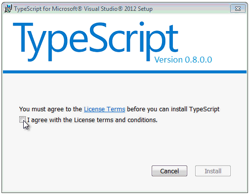
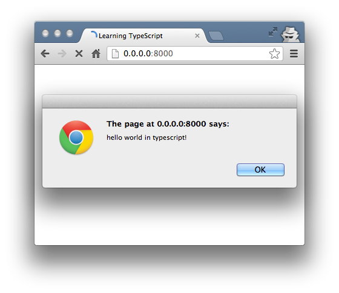
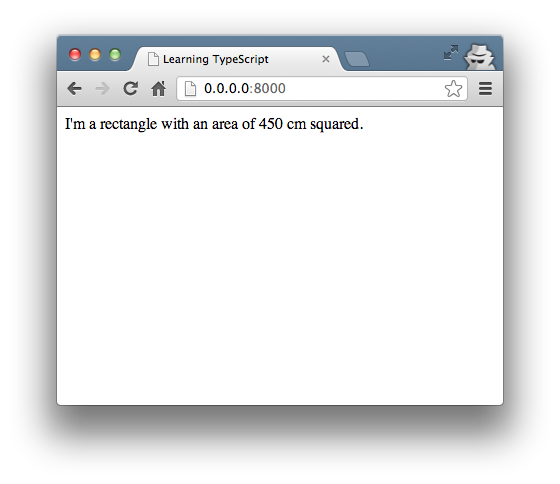
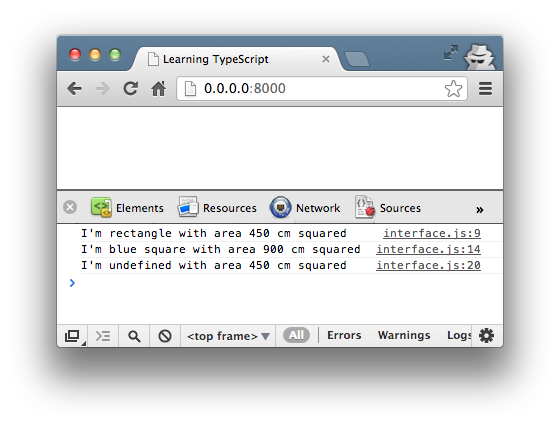
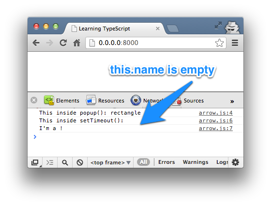
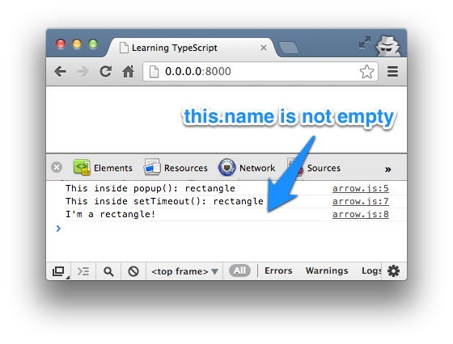
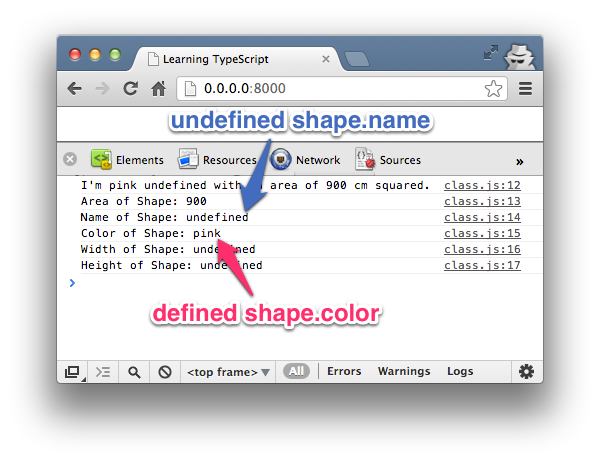
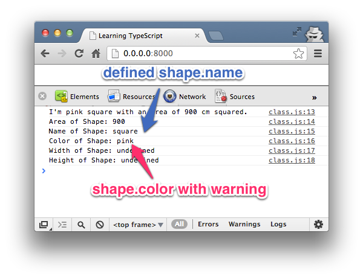
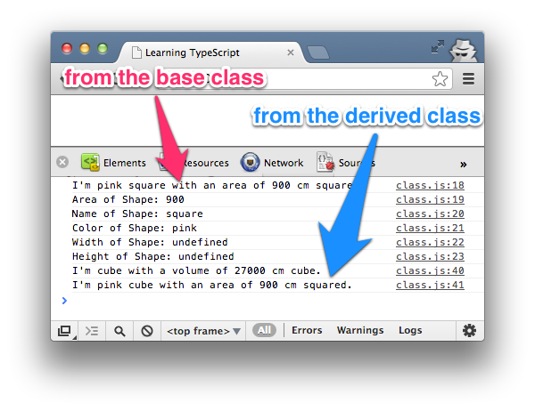

什么是 TypeScript？
TypeScript 是一种由微软开发的自由和开源的编程语言，它是 JavaScript 的一个超集，扩展了 JavaScript 的语法。
语法特性
- 类 Classes
- 接口 Interfaces
- 模块 Modules
- 类型注解 Type annotations
- 编译时类型检查 Compile time type checking
- Arrow 函数 (类似 C# 的 Lambda 表达式)
更多内容可以参考：TypeScript 教程。
JavaScript 与 TypeScript 的区别
TypeScript 是 JavaScript 的超集，扩展了 JavaScript 的语法，因此现有的 JavaScript 代码可与 TypeScript 一起工作无需任何修改，TypeScript 通过类型注解提供编译时的静态类型检查。
TypeScript 可处理已有的 JavaScript 代码，并只对其中的 TypeScript 代码进行编译。
TypeScript 安装
我们可以通过以下两种方式来安装 TypeScript：
- 通过 Node.js 包管理器 (npm)
- 通过与 Visual Studio 2012 继承的 MSI。 (点我下载)。
通过 MSI 文件安装时的界面:

通过 npm 按安装的步骤：
1、安装 npm
$ curl http://npmjs.org/install.sh | sh $ npm --version 2.15.1
2、安装 TypeScript npm 包：
$ npm install -g typescript
安装完成后我们就可以使用 TypeScript 编译器，名称叫 tsc，可将编译结果生成 js 文件。
要编译 TypeScript 文件，可使用如下命令：
tsc filename.ts
一旦编译成功，就会在相同目录下生成一个同名 js 文件，你也可以通过命令参数来修改默认的输出名称。
默认情况下编译器以ECMAScript 3（ES3）为目标但ES5也是受支持的一个选项。TypeScript增加了对为即将到来的ECMAScript 6标准所建议的特性的支持。
TypeScript Hello World
首先，我们创建一个 index.html 文件：
<!DOCTYPE html> <html> <head> <meta charset="utf-8"> <title>Learning TypeScript</title> </head> <body> <script src="hello.js.html"></script> </body> </html>
创建 hello.ts 文件， *.ts 是 TypeScript 文件的后缀，向 hello.ts 文件添加如下代码：
alert('hello world in TypeScript!');
接下来，我们打开命令行，使用 tsc 命令编译 hello.ts 文件：
$ tsc hello.ts
在相同目录下就会生成一个 hello.js 文件，然后打开 index.html 输出结果如下：

类型批注
TypeScript 通过类型批注提供静态类型以在编译时启动类型检查。这是可选的，而且可以被忽略而使用 JavaScript 常规的动态类型。
function Add(left: number, right: number): number {
return left + right;
}
对于基本类型的批注是number, bool和string。而弱或动态类型的结构则是any类型。
类型批注可以被导出到一个单独的声明文件以让使用类型的已被编译为JavaScript的TypeScript脚本的类型信息可用。批注可以为一个现有的JavaScript库声明，就像已经为Node.js和jQuery所做的那样。
当类型没有给出时，TypeScript编译器利用类型推断以推断类型。如果由于缺乏声明，没有类型可以被推断出，那么它就会默认为是动态的any类型。
实例
接下来我们在 TypeScript 文件 type.ts 中创建一个简单的 area() 函数：
function area(shape: string, width: number, height: number) {
var area = width * height;
return "I'm a " + shape + " with an area of " + area + " cm squared.";
}
document.body.innerHTML = area("rectangle", 30, 15);
接下来，修改 index.html 的 js 文件为 type.js 然后编译 TypeScript 文件： tsc type.ts。
浏览器刷新 index.html 文件，输出结果如下:

接口
接下来，我们通过一个接口来扩展以上实例，创建一个 interface.ts 文件，修改 index.html 的 js 文件为 interface.js。
interface.js 文件代码如下:
interface Shape {
name: string;
width: number;
height: number;
color?: string;
}
function area(shape : Shape) {
var area = shape.width * shape.height;
return "I'm " + shape.name + " with area " + area + " cm squared";
}
console.log( area( {name: "rectangle", width: 30, height: 15} ) );
console.log( area( {name: "square", width: 30, height: 30, color: "blue"} ) );
接口可以作为一个类型批注。
编译以上代码 tsc interface.ts 不会出现错误，但是如果你在以上代码后面添加缺失 name 参数的语句则在编译时会报错：
console.log( area( {width: 30, height: 15} ) );
重新编译，错误信息如下：
$ tsc hello.ts
hello.ts(15,20): error TS2345: Argument of type '{ width: number; height: number; }' is not assignable to parameter of type 'Shape'.
Property 'name' is missing in type '{ width: number; height: number; }'.
浏览器访问，输出结果如下：

箭头函数表达式（lambda表达式）
lambda表达式 ()=>{something}或()=>something 相当于js中的函数,它的好处是可以自动将函数中的this附加到上下文中。
尝试执行以下：
var shape = {
name: "rectangle",
popup: function() {
console.log('This inside popup(): ' + this.name);
setTimeout(function() {
console.log('This inside setTimeout(): ' + this.name);
console.log("I'm a " + this.name + "!");
}, 3000);
}
};
shape.popup();
实例中的 this.name 是一个空值：

接下来我们使用 TypeScript 的箭头函数。把 function() 替换为 () =>：
var shape = {
name: "rectangle",
popup: function() {
console.log('This inside popup(): ' + this.name);
setTimeout( () => {
console.log('This inside setTimeout(): ' + this.name);
console.log("I'm a " + this.name + "!");
}, 3000);
}
};
shape.popup();
输出结果如下：

在以上实例编译后端 js 文件中，我们可以看到一行 var _this = this;，_this 在 setTimeout() 的回调函数引用了 name 属性。
类
TypeScript支持集成了可选的类型批注支持的ECMAScript 6的类。
接下来我们创建一个类文件 class.ts，代码如下：
class Shape {
area: number;
color: string;
constructor ( name: string, width: number, height: number ) {
this.area = width * height;
this.color = "pink";
};
shoutout() {
return "I'm " + this.color + " " + this.name + " with an area of " + this.area + " cm squared.";
}
}
var square = new Shape("square", 30, 30);
console.log( square.shoutout() );
console.log( 'Area of Shape: ' + square.area );
console.log( 'Name of Shape: ' + square.name );
console.log( 'Color of Shape: ' + square.color );
console.log( 'Width of Shape: ' + square.width );
console.log( 'Height of Shape: ' + square.height );
以上 Shape 类中有两个属性 area 和 color，一个构造器 (constructor()), 一个方法是 shoutout() 。
构造器中参数(name, width 和 height) 的作用域是局部变量，所以编译以上文件，在浏览器输出错误结果如下所示：
class.ts(12,42): The property 'name' does not exist on value of type 'Shape' class.ts(20,40): The property 'name' does not exist on value of type 'Shape' class.ts(22,41): The property 'width' does not exist on value of type 'Shape' class.ts(23,42): The property 'height' does not exist on value of type 'Shape'

接下来，我们添加 public 和 private 访问修饰符。Public 成员可以在任何地方访问， private 成员只允许在类中访问。
接下来我们修改以上代码，将 color 声明为 private，构造函数的参数 name 声明为 public：
...
private color: string;
...
constructor ( public name: string, width: number, height: number ) {
...

由于 color 成员变量设置了 private，所以会出现以下信息：
class.ts(24,41): The property 'color' does not exist on value of type 'Shape'
继承
最后，我们可以继承一个已存在的类并创建一个派生类，继承使用关键字 extends。
接下来我们在 class.ts 文件末尾添加以下代码，如下所示：
class Shape3D extends Shape {
volume: number;
constructor ( public name: string, width: number, height: number, length: number ) {
super( name, width, height );
this.volume = length * this.area;
};
shoutout() {
return "I'm " + this.name + " with a volume of " + this.volume + " cm cube.";
}
superShout() {
return super.shoutout();
}
}
var cube = new Shape3D("cube", 30, 30, 30);
console.log( cube.shoutout() );
console.log( cube.superShout() );
派生类 Shape3D 说明：
- Shape3D 继承了 Shape 类, 也继承了 Shape 类的 color 属性。
- 构造函数中，super 方法调用了基类 Shape 的构造函数 Shape，传递了参数 name, width, 和 height 值。 继承允许我们复用 Shape 类的代码，所以我们可以通过继承 area 属性来计算 this.volume。
- Shape3D 的 shoutout() 方法重写基类的实现。superShout() 方法通过使用 super 关键字直接返回了基类的 shoutout() 方法。
- 其他的代码我们可以通过自己的需求来完成自己想要的功能。

参考文档
- TypeScript 中文手册:http://www.runoob.com/manual/gitbook/TypeScript/_book/
- http://code.tutsplus.com/tutorials/getting-started-with-typescript--net-28890
- https://zh.wikipedia.org/wiki/TypeScript

点我分享笔记